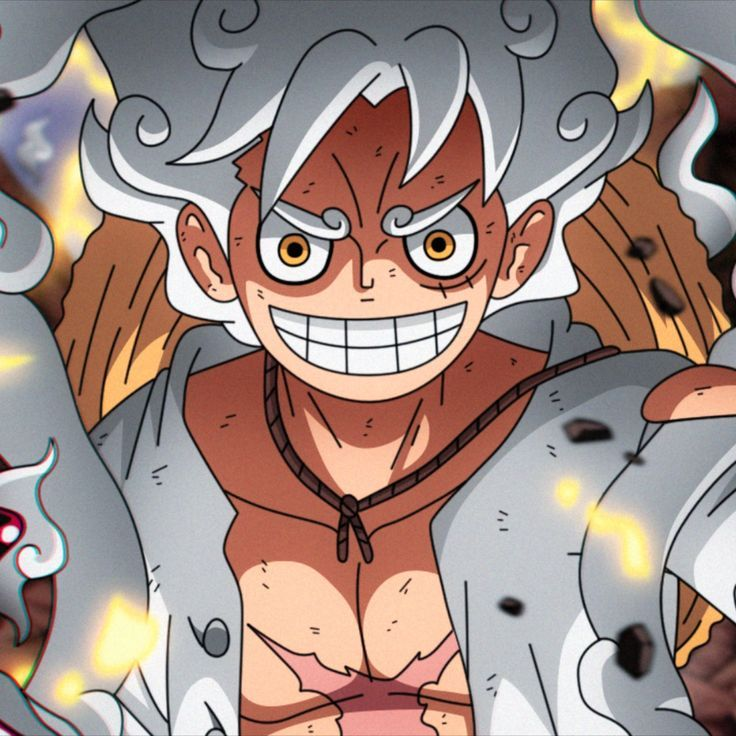
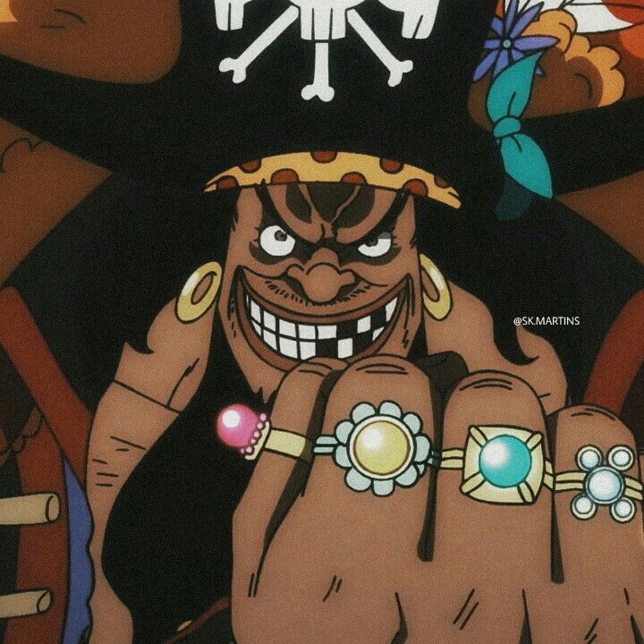
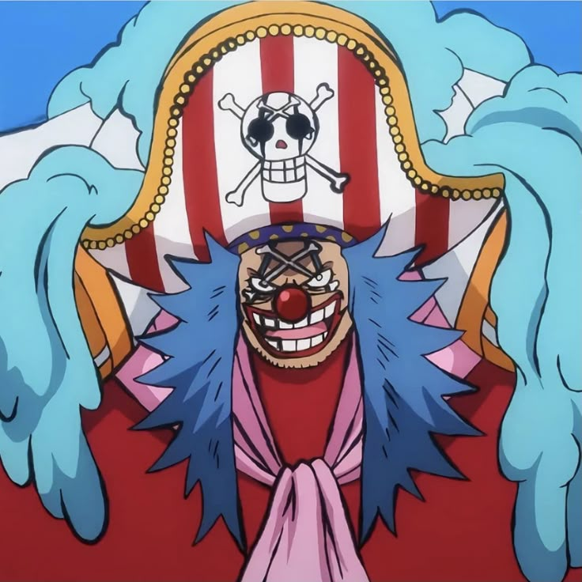
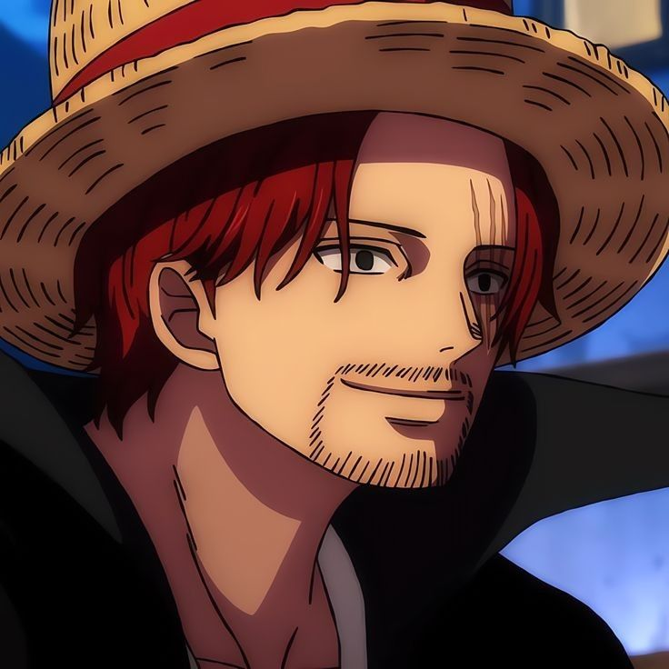

Conhecido como "Imperadores do Mar"
Os Yonkous são os quatro capitães piratas mais poderosos do mundo. Eles não estão sob o controle do Governo Mundial e exercem um domínio absoluto sobre vastos territórios no Novo Mundo, operando quase como verdadeiros reis e mantendo o equilíbrio de poder global através da força militar bruta.
Agora, venha conhece-los!

Luffy
Conquistou o título de yonkou após a Batalha de Onigashima no País de Wano, derrotando o temido "Kaido".
Saiba mais
"Barba Negra"
Ascendeu ao posto de Yonkou após vencer a "Guerra de Vingança" e controlar muitos territórios inimigos.
Saiba mais
Buggy
Ascendeu de forma surpreendente ao posto de Yonkou graças a uma confusão política gerada pela Marinha.
Saiba mais
Shanks
Consolidou sua posição ao longo de anos, mantendo um poder militar formidável e respeito global
Saiba mais